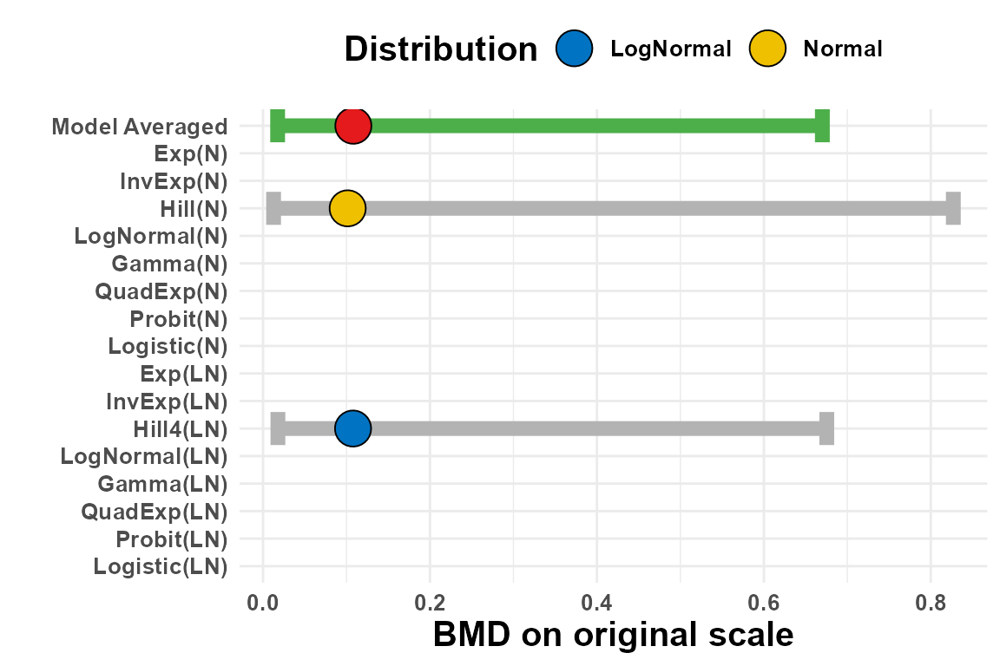
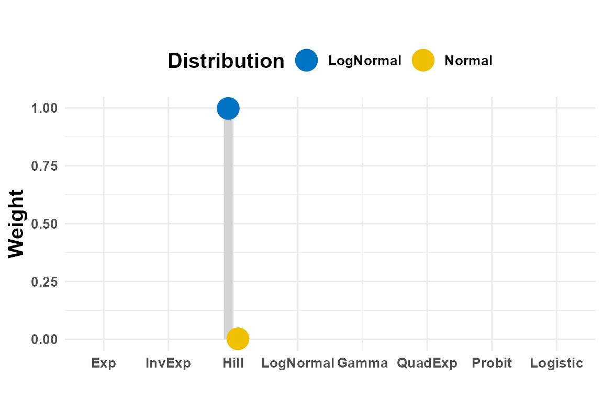
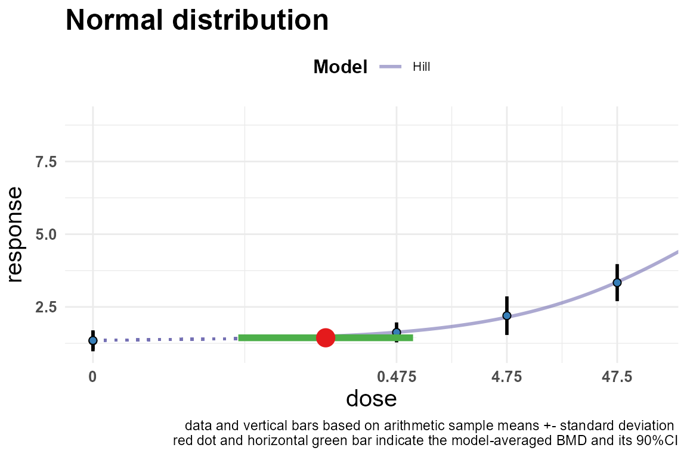
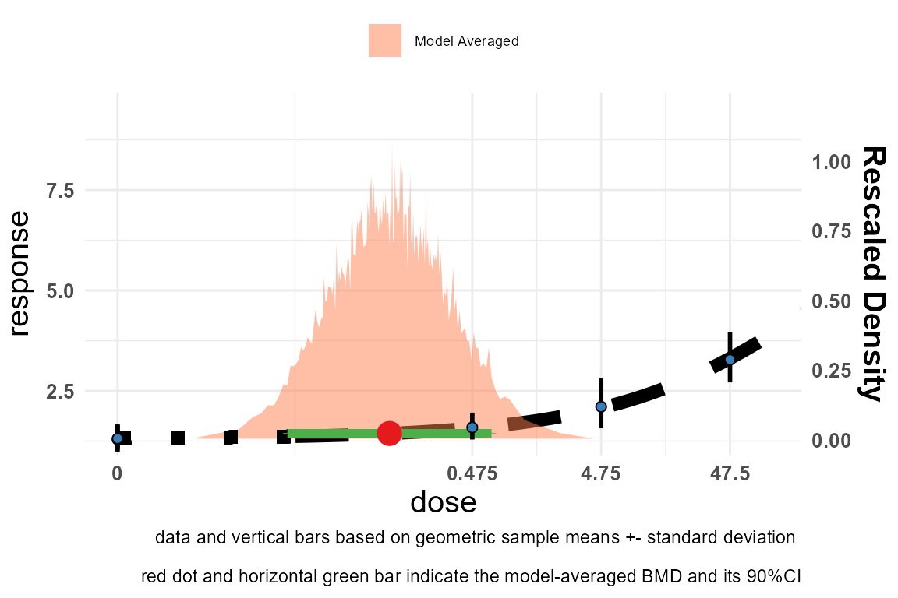
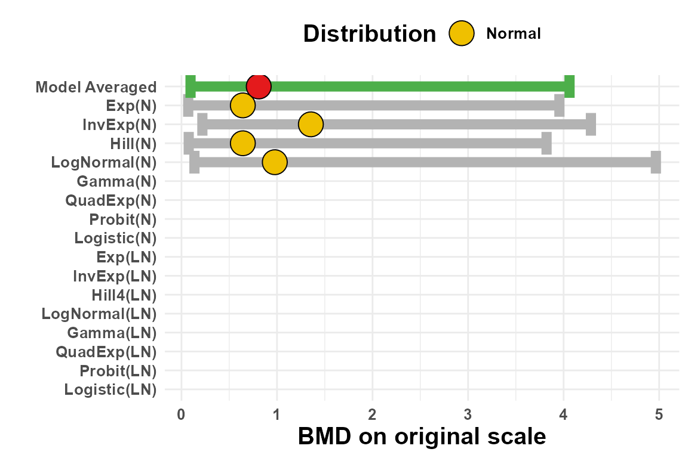
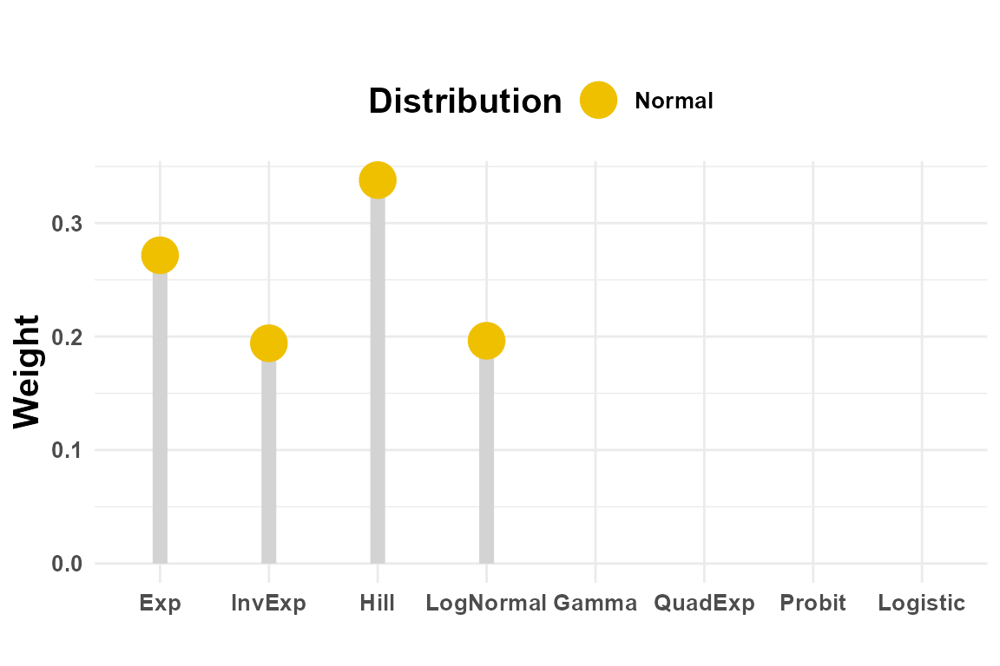
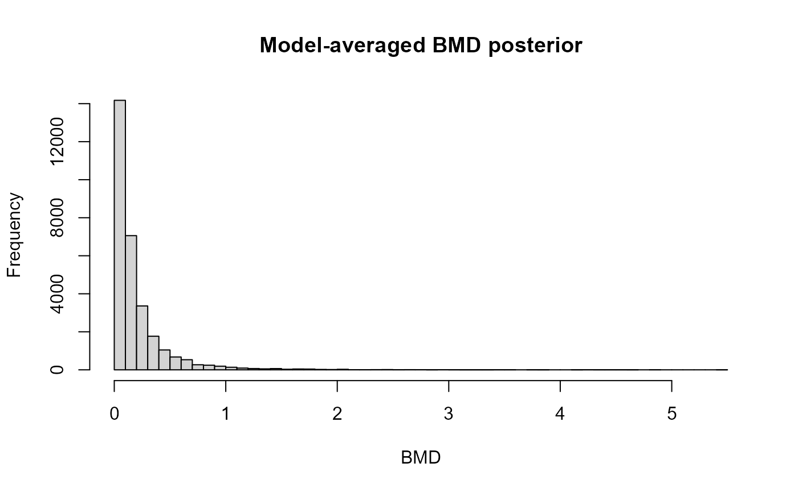

vignettes/BMABMDR-introduction.Rmd
BMABMDR-introduction.RmdBenchmark Dose (BMD) analysis is the standard
approach in toxicology and risk assessment for characterising
dose-response relationships and deriving safe exposure levels. The BMD
is the dose at which the expected response changes by a pre-specified
amount (the Benchmark Response, BMR, expressed as a proportion
q) relative to background.
A long-standing problem is that the estimated BMD can differ substantially across plausible dose-response models, and choosing a single model introduces model-selection uncertainty that is not reflected in the final confidence/credible interval. Bayesian Model Averaging (BMA) addresses this by fitting a collection of candidate models simultaneously and combining their posteriors with evidence-based weights.
BMABMDR implements BMA-based BMD estimation for:
Two inference engines are provided:
| Engine | Function | Speed | Accuracy |
|---|---|---|---|
| Laplace approximation | full.laplace_MA() |
Fast (seconds) | Good |
| Full Bayesian (HMC + bridge sampling) | sampling_MA() |
Slow (minutes) | Best |
Raw data
│
├─ PREP_DATA_N() ──┐
├─ PREP_DATA_LN() ──┤ data objects
└─ PREP_DATA_QA() ──┘
│
[optional] anydoseresponseN() ← Bayes factor test: is there a dose effect?
│
full.laplace_MA() or sampling_MA()
│
plot.BMADR() / summary.BMADR() / print.BMADR()Use get_models() to inspect model names and their index
positions, which correspond to the positions in the
prior.weights vector.
get_models(type = "continuous") # 16 models: 8 shapes × {Normal, Lognormal}
#> Exponential Normal Inverse Exponential Normal
#> "E4_N" "IE4_N"
#> Hill Normal Lognormal Normal
#> "H4_N" "LN4_N"
#> Gamma Normal Quadratic Exponential Normal
#> "G4_N" "QE4_N"
#> Probit Normal Logit Normal
#> "P4_N" "L4_N"
#> Exponential Lognormal Inverse Exponential Lognormal
#> "E4_LN" "IE4_LN"
#> Hill Lognormal Lognormal Lognormal
#> "H4_LN" "LN4_LN"
#> Gamma Lognormal Quadratic Exponential Lognormal
#> "G4_LN" "QE4_LN"
#> Probit Lognormal Logit Lognormal
#> "P4_LN" "L4_LN"
get_models(type = "quantal") # 8 models
#> Exponential Inverse Exponential Hill
#> "E4_Q" "IE4_Q" "H4_Q"
#> Lognormal Gamma Quadratic Exponential
#> "LN4_Q" "G4_Q" "QE4_Q"
#> Probit Logit
#> "P4_Q" "L4_Q"The eight dose-response shapes are:
| Code | Shape |
|---|---|
E4 |
Exponential |
IE4 |
Inverse Exponential |
H4 |
Hill |
LN4 |
Log-normal CDF |
G4 |
Gamma CDF |
QE4 |
Quadratic Exponential |
P4 |
Probit |
L4 |
Logit |
The function runs full HMC via rstan::sampling() on two Stan models (null and saturated).
data("immunotoxicityData")
# Use summary statistics from first 5 dose groups
dat5 <- as.data.frame(immunotoxicityData[1:5, ])
bf <- anydoseresponseN(
dose.a = dat5[, 1], # original dose, NOT rescaled
mean.a = dat5[, 2],
sd.a = dat5[, 3],
n.a = dat5[, 4]
)
#> Loading required package: gamlss
#> Loading required package: splines
#> Loading required package: gamlss.data
#>
#> Attaching package: 'gamlss.data'
#> The following object is masked from 'package:datasets':
#>
#> sleep
#> Loading required package: gamlss.dist
#> Loading required package: nlme
#> Loading required package: parallel
#> ********** GAMLSS Version 5.5-0 **********
#> For more on GAMLSS look at https://www.gamlss.com/
#> Type gamlssNews() to see new features/changes/bug fixes.
bf$bf.message
#> [1] "there is sufficient evidence that there is a substantial dose-effect"Two data objects are always required for continuous BMA: one assuming
a Normal distribution on the response scale (PREP_DATA_N)
and one assuming a Log-normal distribution
(PREP_DATA_LN).
# q = 0.1 means a 10% change in mean response relative to background
data_N <- PREP_DATA_N(
data = dat5,
sumstats = TRUE, # summary data (mean, SD, n per group)
sd = TRUE, # column 3 is SD (not SE)
q = 0.1
)
#> distributional assumption of constant variance is met, Bartlett test p-value is 0.0527
#> GAMLSS-RS iteration 1: Global Deviance = -35.5626
#> GAMLSS-RS iteration 2: Global Deviance = -35.5626
#> default prior choices used on background
#> default prior choices used on fold change
#> default prior choices used on BMD
#> GAMLSS-RS iteration 1: Global Deviance = -38.2921
#> GAMLSS-RS iteration 2: Global Deviance = -38.2921
data_LN <- PREP_DATA_LN(
data = dat5,
sumstats = TRUE,
sd = TRUE,
q = 0.1
)
#> distributional assumption of constant variance (on log-scale) is met, Bartlett test p-value is 0.6799
#> GAMLSS-RS iteration 1: Global Deviance = -35.5626
#> GAMLSS-RS iteration 2: Global Deviance = -35.5626
#> default prior choices used on background
#> default prior choices used on fold change
#> default prior choices used on BMD
#> GAMLSS-RS iteration 1: Global Deviance = -38.2921
#> GAMLSS-RS iteration 2: Global Deviance = -38.2921Two warnings commonly appear here and are both benign:
Warning 1 — asymptote prior
the data do not contain information on the asymptote, and the default prior for
fold change has been based on 3 times the observed maximumThe fold-change parameter c (ratio of asymptotic to
background response) cannot be estimated from dose-response data alone
when the curve has not yet reached its plateau.
PREP_DATA_N/LN automatically sets an upper bound of
3 × max(response) as a conservative default. If domain
knowledge exists, supply it via maxy:
# Inform the asymptote: response is known to saturate around 4.5 units
data_LN <- PREP_DATA_LN(
data = dat5, sumstats = TRUE, sd = TRUE, q = 0.1,
maxy = c(3.5, NA, 5.5) # c(min, mode, max); mode can be NA for a flat prior
)Warning 2 — fp() origin shift
In fp(xx) : The origing of the x variable has been shifted by 1e-14This comes from the gamlss fractional polynomial fit
that PREP_DATA_N/LN runs internally to derive data-driven
starting values and prior bounds. A shift of 1e-14 is a
numerical micro-adjustment applied when the dose vector contains an
exact zero (the control group), which fractional polynomials require to
be strictly positive. It has no effect on results and can be safely
ignored.
PREP_DATA_N() returns a list with three elements:
$data — formatted data and prior specifications$start — starting values for optimization$startQ — starting values specific to the Quadratic
Exponential model
# Include all 16 models (default)
fit_lp <- full.laplace_MA(data_N, data_LN)
#> Error in chol.default(-H) : the leading minor of order 5 is not positive
#> Error in chol.default(-H) : the leading minor of order 5 is not positive
# Model-averaged BMD credible interval
fit_lp$MA
#> BMDL BMD BMDU
#> 0.01208694 0.12696541 0.91481259
# Per-model weights
fit_lp$weights
#> E4_N IE4_N H4_N LN4_N G4_N QE4_N
#> 5.092299e-04 2.220808e-04 7.076865e-04 3.109892e-04 6.967644e-09 2.743415e-04
#> P4_N L4_N E4_LN IE4_LN H4_LN LN4_LN
#> 3.517185e-09 3.530460e-09 1.987647e-01 1.116122e-01 3.336236e-01 1.297884e-01
#> G4_LN QE4_LN P4_LN L4_LN
#> 6.184866e-05 7.660952e-02 7.590802e-02 7.160740e-02To restrict the model set — for example, to the four Exponential-family models under both distributional assumptions — set unused weights to zero:
pw <- rep(0, 16)
pw[c(1, 9)] <- 1 # E4 (Normal) and E4 (Lognormal) only
fit_lp2 <- full.laplace_MA(data_N, data_LN, prior.weights = pw)
fit_lp2$MA
#> BMDL BMD BMDU
#> 0.01036777 0.07475900 0.53221095Note that models with prior.weights[k] == 0 are
never fitted — the Stan optimizer is never called for them.
This makes restricting the model set via prior.weights a
genuine computational saving, not just a post-hoc reweighting.
The same pattern holds in sampling_MA() — the HMC chains
are only launched for models with prior.weights[k] > 0,
so excluding models there saves even more time (each chain takes ~30–60
seconds).
Practical implication: if you know the response is sigmoidal and want only Hill-family models, this runs roughly 4× faster than the default:
pw <- rep(0, 16)
pw[c(3, 11)] <- 1 # H4_N and H4_LN only
fit_lp <- full.laplace_MA(data_N, data_LN, prior.weights = pw)plot.BMADR() returns a named list of
ggplot2 objects.
plots <- plot.BMADR(
fit_lp,
type = "increasing", # or "decreasing"
weight_type = "LP", # "LP" for Laplace, "BS" for bridge sampling
title = "Immunotoxicity — BMA (Laplace)"
)
#> `height` was translated to `width`.
#> `height` was translated to `width`.
#> `height` was translated to `width`.
#> `height` was translated to `width`.
#> `height` was translated to `width`.
#> `height` was translated to `width`.
plots$BMDs # credible intervals per model and for MA
#> `height` was translated to `width`.
#> `height` was translated to `width`.
plots$weights # model weight bar chart
plots$model_fit_N # individual Normal model fits
#> `height` was translated to `width`.
plots$MA_fit # model-averaged dose-response curve
#> `height` was translated to `width`.
The interface is identical; the computation is substantially slower because it runs full HMC chains and then calculates marginal likelihoods via bridge sampling.
fit_bs <- sampling_MA(
data_N, data_LN,
prior.weights = c(rep(1, 4), rep(0, 12)), # Family-1 models only
nrchains = 3,
nriterations = 3000,
warmup = 1000,
delta = 0.8,
treedepth = 10,
seed = 123
)
#> convergence achieved.
#>
#> convergence achieved.
#>
#> convergence achieved.
# Bridge-sampling MA result
fit_bs$MA_bridge_sampling
#> BMDL BMD BMDU
#> 0.09486997 0.80874366 4.06200812
# Hybrid Laplace MA result (model parameters from MCMC, weights from Laplace)
fit_bs$MA_laplace
#> BMDL BMD BMDU
#> 0.08860306 0.75786856 4.01960058
# Convergence diagnostics
fit_bs$convergence # 1 = converged, 0 = not
#> [1] 1 1 1 1 NA NA NA NA NA NA NA NA NA NA NA NA
fit_bs$divergences # proportion of divergent transitions per model
#> [1] 0.007666667 0.007000000 0.008166667 0.010666667 NA NA
#> [7] NA NA NA NA NA NA
#> [13] NA NA NA NA
plots_bs <- plot.BMADR(
fit_bs,
type = "increasing",
weight_type = "BS",
title = "Immunotoxicity — BMA (Bridge Sampling)"
)
#> `height` was translated to `width`.
#> `height` was translated to `width`.
#> `height` was translated to `width`.
#> `height` was translated to `width`.
#> `height` was translated to `width`.
plots_bs$BMDs
#> `height` was translated to `width`.
#> `height` was translated to `width`.
plots_bs$weights
data("data_quantal")
data_Q <- PREP_DATA_QA(data = data_quantal, sumstats = TRUE, q = 0.1)
#> GAMLSS-RS iteration 1: Global Deviance = 14.6439
#> GAMLSS-RS iteration 2: Global Deviance = 14.6439
#> default prior choices used on background
#> default prior choices used on BMD
fit_q <- full.laplaceQ_MA(data.Q = data_Q, prior.weights = rep(1, 8))
fit_q$MA
#> BMDL BMD BMDU
#> 0.5531284 2.8017514 14.6312465For clustered quantal data (e.g., developmental toxicology with litter effects):
data("data_quantal_litter")
data_QL <- PREP_DATA_QA(data = data_quantal_litter, sumstats = TRUE, q = 0.1, cluster = TRUE)
#> GAMLSS-RS iteration 1: Global Deviance = 328.0836
#> GAMLSS-RS iteration 2: Global Deviance = 326.2945
#> GAMLSS-RS iteration 3: Global Deviance = 326.1379
#> GAMLSS-RS iteration 4: Global Deviance = 326.126
#> GAMLSS-RS iteration 5: Global Deviance = 326.1251
#> GAMLSS-RS iteration 1: Global Deviance = 327.8699
#> GAMLSS-RS iteration 2: Global Deviance = 326.0807
#> GAMLSS-RS iteration 3: Global Deviance = 325.9259
#> GAMLSS-RS iteration 4: Global Deviance = 325.9142
#> GAMLSS-RS iteration 5: Global Deviance = 325.9134
#> default prior choices used on background
#> default prior choices used on BMD
fit_ql <- full.laplaceQ_MA(data.Q = data_QL, prior.weights = rep(1, 8))
#> GAMLSS-RS iteration 1: Global Deviance = 327.8699
#> GAMLSS-RS iteration 2: Global Deviance = 326.0807
#> GAMLSS-RS iteration 3: Global Deviance = 325.9259
#> GAMLSS-RS iteration 4: Global Deviance = 325.9142
#> GAMLSS-RS iteration 5: Global Deviance = 325.9134
fit_ql$MA
#> BMDL BMD BMDU
#> 1.494248 4.100566 7.342206When cluster = TRUE is set, the likelihood model
switches from Binomial to Beta-Binomial for every one of the 8
quantal dose-response shapes. Here’s what that means:
Without litter (cluster = FALSE) —
Binomial:
Each animal responds independently. Given dose-response probability at dose :
With litter (cluster = TRUE) —
Beta-Binomial:
Animals within the same litter are correlated — they share the same dam, uterine environment, etc. The response probability itself varies across litters as a Beta distribution with mean and an overdispersion parameter :
where ,
is the intra-litter correlation (ICC): how similar
littermates are relative to animals from different litters. It gets a
PERT prior pert_dist(0, mode, 1, 4) and is estimated from
the data alongside all other parameters.
Practical consequence: ignoring litter when it’s present underestimates variance → overestimates precision → BMD confidence interval is artificially too narrow. The Beta-Binomial accounts for this extra variance, producing honest (wider) uncertainty intervals.
The default priors are weakly informative, derived from the data.
Expert knowledge can be incorporated via the bkg,
maxy, and prior.BMD arguments in
PREP_DATA_N().
# Inform on background response (min, mode, max of PERT distribution)
data_N_inf <- PREP_DATA_N(
data = dat5,
sumstats = TRUE, sd = TRUE, q = 0.1,
bkg = c(0.5, 1.0, 2.0) # background response range
)
#> distributional assumption of constant variance is met, Bartlett test p-value is 0.0527
#> GAMLSS-RS iteration 1: Global Deviance = -35.5626
#> GAMLSS-RS iteration 2: Global Deviance = -35.5626
#> default prior choices used on fold change
#> default prior choices used on BMD
#> GAMLSS-RS iteration 1: Global Deviance = -38.2921
#> GAMLSS-RS iteration 2: Global Deviance = -38.2921
# Peaked informative prior on the BMD
data_N_bmd <- PREP_DATA_N(
data = dat5,
sumstats = TRUE, sd = TRUE, q = 0.1,
prior.BMD = c(0.05, 0.25, 1.0), # BMDL, mode, BMDU
shape.BMD = 4 # 4 = peaked, 0.0001 ≈ uniform
)
#> distributional assumption of constant variance is met, Bartlett test p-value is 0.0527
#> GAMLSS-RS iteration 1: Global Deviance = -35.5626
#> GAMLSS-RS iteration 2: Global Deviance = -35.5626
#> default prior choices used on background
#> default prior choices used on fold change
#> GAMLSS-RS iteration 1: Global Deviance = -38.2921
#> GAMLSS-RS iteration 2: Global Deviance = -38.2921The prior on d (the slope parameter) can also be
changed:
# EPA-recommended prior for d
data_N_epa <- PREP_DATA_N(
data = dat5,
sumstats = TRUE, sd = TRUE, q = 0.1,
prior.d = "EPA" # N(0.4, sqrt(0.5)), truncated at 5
)
#> distributional assumption of constant variance is met, Bartlett test p-value is 0.0527
#> GAMLSS-RS iteration 1: Global Deviance = -35.5626
#> GAMLSS-RS iteration 2: Global Deviance = -35.5626
#> default prior choices used on background
#> default prior choices used on fold change
#> default prior choices used on BMD
#> GAMLSS-RS iteration 1: Global Deviance = -38.2921
#> GAMLSS-RS iteration 2: Global Deviance = -38.2921
# Custom prior on d
data_N_custom <- PREP_DATA_N(
data = dat5,
sumstats = TRUE, sd = TRUE, q = 0.1,
prior.d = "custom",
d.mean = 0.5,
d.std = 0.5,
d.trunc = 4
)
#> distributional assumption of constant variance is met, Bartlett test p-value is 0.0527
#> GAMLSS-RS iteration 1: Global Deviance = -35.5626
#> GAMLSS-RS iteration 2: Global Deviance = -35.5626
#> default prior choices used on background
#> default prior choices used on fold change
#> default prior choices used on BMD
#> GAMLSS-RS iteration 1: Global Deviance = -38.2921
#> GAMLSS-RS iteration 2: Global Deviance = -38.2921If you have raw individual observations rather than group summary
statistics, pass sumstats = FALSE:
# PREP_DATA_N(sumstats = FALSE) expects a 2-column data frame:
# column 1 = dose, column 2 = response (one row per animal)
#
# We simulate individual-level data from the immunotoxicity summary statistics
# to demonstrate the workflow.
set.seed(42)
indiv_data <- do.call(rbind, lapply(seq_len(nrow(dat5)), function(i) {
data.frame(
dose = rep(dat5$Dose[i], dat5$n[i]),
response = rnorm(dat5$n[i], mean = dat5$Mean[i], sd = dat5$SD[i])
)
}))
data_N_indiv <- PREP_DATA_N(
data = indiv_data,
sumstats = FALSE,
q = 0.05
)
#> distributional assumption of constant variance is met, Bartlett test p-value is 0.1579
#> GAMLSS-RS iteration 1: Global Deviance = -43.3998
#> GAMLSS-RS iteration 2: Global Deviance = -43.3998
#> default prior choices used on background
#> default prior choices used on fold change
#> default prior choices used on BMD
#> GAMLSS-RS iteration 1: Global Deviance = -44.8948
#> GAMLSS-RS iteration 2: Global Deviance = -44.8948
## ummary(fit_lp$H4_LN)
# Posterior draws from the MA distribution (on original dose scale)
hist(fit_lp$BMDMixture, breaks = 50,
main = "Model-averaged BMD posterior",
xlab = "BMD")
# Per-model parameter estimates (median + 95% CrI)
fit_lp$E4_N # Exponential + Normal
#> [,1] [,2] [,3]
#> par.dt NA NA NA
#> par.is2t NA NA NA
#> par.k NA NA NA
#> par.a NA NA NA
#> par.b NA NA NA
#> par.c NA NA NA
#> par.d NA NA NA
#> par.s2 NA NA NA
#> BMD NA NA NA
#> min.resp NA NA NA
#> max.resp NA NA NA
#> fold.change NA NA NA
fit_lp$H4_LN # Hill + Lognormal
#> 2.5% 50% 97.5%
#> par.dt -1.17788493 -0.74331762 -0.29650479
#> par.is2t 2.54156748 2.92826648 3.32350422
#> par.k -7.88963312 -6.08793751 -4.25323133
#> par.a 0.17002719 0.26951490 0.37041252
#> par.b 0.28389340 1.08581259 3.03894590
#> par.c 4.31985057 8.06601053 14.75738383
#> par.d 0.30792934 0.47553366 0.74341206
#> par.s2 0.03602637 0.05348968 0.07874287
#> BMD 0.01779383 0.10782909 0.67536525
#> min.resp 1.18533708 1.30932915 1.44833196
#> max.resp 3.37197820 8.74742807 28.98903305
#> fold.change 2.59954739 6.67533036 22.22339247
# Model-averaged dose-response at each observed dose level
fit_lp$MA_dr
#> [1] 1.309417 1.309417 1.573139 2.074230 3.311317
# Goodness-of-fit check (Bayes factor vs saturated model)
fit_lp$gof_check
#> [1] "Best fitting model fits sufficiently well (Bayes factor is 1.50e-01)."For data with a single binary covariate (e.g., sex, treatment arm),
use the _COV variants of the preparation and fitting
functions:
data("continuous_cov")
# Note: the .rda file contains an object named 'data_cont_covariate'
# full.laplace_MA_Cov() takes raw data and calls PREP_DATA_NCOV() internally
fit_cov <- full.laplace_MA_Cov(
data = data_cont_covariate,
sumstats = TRUE,
sd = TRUE,
q = 0.1
)
#> distributional assumption of constant variance are met for group Male, Bartlett test p-value is 0.7627
#> distributional assumption of constant variance are met for group Female, Bartlett test p-value is 0.5937
#> GAMLSS-RS iteration 1: Global Deviance = -20.379
#> GAMLSS-RS iteration 2: Global Deviance = -20.379
#> default prior choices used on background
#> default prior choices used on fold change
#> GAMLSS-RS iteration 1: Global Deviance = -20.379
#> GAMLSS-RS iteration 2: Global Deviance = -20.379
#> default prior choices used on background
#> default prior choices used on fold change
#> GAMLSS-RS iteration 1: Global Deviance = -26.3218
#> GAMLSS-RS iteration 2: Global Deviance = -26.3218
#> GAMLSS-RS iteration 1: Global Deviance = -25.1272
#> GAMLSS-RS iteration 2: Global Deviance = -25.1272
#> default prior choices used on BMD
#> distributional assumption of constant variance is met, Bartlett test p-value is 0.8792
#> GAMLSS-RS iteration 1: Global Deviance = -20.379
#> GAMLSS-RS iteration 2: Global Deviance = -20.379
#> default prior choices used on background
#> default prior choices used on fold change
#> default prior choices used on BMD
#> GAMLSS-RS iteration 1: Global Deviance = 26.4866
#> GAMLSS-RS iteration 2: Global Deviance = 26.4866
#> distributional assumption of constant variance are met for group Male, Bartlett test p-value is 0.7627
#> distributional assumption of constant variance are met for group Female, Bartlett test p-value is 0.5937
#> GAMLSS-RS iteration 1: Global Deviance = -20.379
#> GAMLSS-RS iteration 2: Global Deviance = -20.379
#> default prior choices used on background
#> default prior choices used on fold change
#> GAMLSS-RS iteration 1: Global Deviance = -20.379
#> GAMLSS-RS iteration 2: Global Deviance = -20.379
#> default prior choices used on background
#> default prior choices used on fold change
#> GAMLSS-RS iteration 1: Global Deviance = -18.0344
#> GAMLSS-RS iteration 2: Global Deviance = -18.0344
#> default prior choices used on BMD
#> distributional assumption of constant variance is met, Bartlett test p-value is 0.3881
#> GAMLSS-RS iteration 1: Global Deviance = -33.767
#> GAMLSS-RS iteration 2: Global Deviance = -33.767
#> default prior choices used on background
#> default prior choices used on fold change
#> GAMLSS-RS iteration 1: Global Deviance = -26.3218
#> GAMLSS-RS iteration 2: Global Deviance = -26.3218
#> GAMLSS-RS iteration 1: Global Deviance = -25.1272
#> GAMLSS-RS iteration 2: Global Deviance = -25.1272
#> default prior choices used on BMD
#> distributional assumption of constant coefficient of variation is met for group Male, Bartlett test p-value is 0.5923
#> distributional assumption of constant coefficient of variation is met for group Female, Bartlett test p-value is 0.2813
#> GAMLSS-RS iteration 1: Global Deviance = -20.379
#> GAMLSS-RS iteration 2: Global Deviance = -20.379
#> default prior choices used on background
#> default prior choices used on fold change
#> GAMLSS-RS iteration 1: Global Deviance = -20.379
#> GAMLSS-RS iteration 2: Global Deviance = -20.379
#> default prior choices used on background
#> default prior choices used on fold change
#> GAMLSS-RS iteration 1: Global Deviance = -26.3218
#> GAMLSS-RS iteration 2: Global Deviance = -26.3218
#> GAMLSS-RS iteration 1: Global Deviance = -25.1272
#> GAMLSS-RS iteration 2: Global Deviance = -25.1272
#> default prior choices used on BMD
#> distributional assumption of constant coefficient of variation is met for group Male, Bartlett test p-value is 0.5923
#> distributional assumption of constant coefficient of variation is met for group Female, Bartlett test p-value is 0.2813
#> GAMLSS-RS iteration 1: Global Deviance = -20.379
#> GAMLSS-RS iteration 2: Global Deviance = -20.379
#> default prior choices used on background
#> default prior choices used on fold change
#> GAMLSS-RS iteration 1: Global Deviance = -20.379
#> GAMLSS-RS iteration 2: Global Deviance = -20.379
#> default prior choices used on background
#> default prior choices used on fold change
#> GAMLSS-RS iteration 1: Global Deviance = -18.0344
#> GAMLSS-RS iteration 2: Global Deviance = -18.0344
#> default prior choices used on BMD
#> distributional assumption of constant coefficient of variation is met, Bartlett test p-value is %1$5.4f0.1316
#> GAMLSS-RS iteration 1: Global Deviance = -33.767
#> GAMLSS-RS iteration 2: Global Deviance = -33.767
#> default prior choices used on background
#> default prior choices used on fold change
#> GAMLSS-RS iteration 1: Global Deviance = -26.3218
#> GAMLSS-RS iteration 2: Global Deviance = -26.3218
#> GAMLSS-RS iteration 1: Global Deviance = -25.1272
#> GAMLSS-RS iteration 2: Global Deviance = -25.1272
#> default prior choices used on BMD
#> distributional assumption of constant variance (on log-scale) is met, Bartlett test p-value is 0.4963
#> GAMLSS-RS iteration 1: Global Deviance = -20.379
#> GAMLSS-RS iteration 2: Global Deviance = -20.379
#> default prior choices used on background
#> default prior choices used on fold change
#> default prior choices used on BMD
#> GAMLSS-RS iteration 1: Global Deviance = 26.4866
#> GAMLSS-RS iteration 2: Global Deviance = 26.4866
#> Error in chol.default(-H) : the leading minor of order 6 is not positive
fit_cov$MA
#> BMDL BMD BMDU
#> Male 0.5037279 0.5805492 0.6652928
#> Female 0.2608050 0.3256847 0.4106026| Task | Function |
|---|---|
| Check for dose-response |
anydoseresponseN(),
anydoseresponseLN()
|
| Prepare continuous data |
PREP_DATA_N(), PREP_DATA_LN()
|
| Prepare quantal data | PREP_DATA_QA() |
| Prepare clustered continuous data |
PREP_DATA_N_C(), PREP_DATA_LN_C()
|
| BMA — Laplace (continuous) |
full.laplace_MA(), full.laplace_MAc()
|
| BMA — Laplace (quantal) | full.laplaceQ_MA() |
| BMA — Bridge sampling (continuous) |
sampling_MA(), sampling_MAc()
|
| BMA — Bridge sampling (quantal) | samplingQ_MA() |
| Plots | plot.BMADR() |
| Print/summarise |
print.BMADR(), summary.BMADR()
|
| Prior visualisation | plot_prior() |
| MCMC diagnostics | posterior_diag() |
| List model names/order | get_models() |
sessionInfo()
#> R version 4.5.1 (2025-06-13 ucrt)
#> Platform: x86_64-w64-mingw32/x64
#> Running under: Windows 11 x64 (build 22631)
#>
#> Matrix products: default
#> LAPACK version 3.12.1
#>
#> locale:
#> [1] LC_COLLATE=English_Germany.utf8 LC_CTYPE=English_Germany.utf8
#> [3] LC_MONETARY=English_Germany.utf8 LC_NUMERIC=C
#> [5] LC_TIME=English_Germany.utf8
#>
#> time zone: Europe/Berlin
#> tzcode source: internal
#>
#> attached base packages:
#> [1] parallel splines stats graphics grDevices utils datasets
#> [8] methods base
#>
#> other attached packages:
#> [1] gamlss_5.5-0 nlme_3.1-168 gamlss.dist_6.1-1 gamlss.data_6.0-7
#> [5] BMABMDR_0.1.20
#>
#> loaded via a namespace (and not attached):
#> [1] tidyselect_1.2.1 dplyr_1.1.4 farver_2.1.2
#> [4] loo_2.8.0 S7_0.2.1 fastmap_1.2.0
#> [7] pracma_2.4.6 tensorA_0.36.2.1 promises_1.5.0
#> [10] digest_0.6.36 mime_0.13 lifecycle_1.0.4
#> [13] StanHeaders_2.32.10 mc2d_0.2.1 survival_3.8-3
#> [16] magrittr_2.0.3 posterior_1.6.1 compiler_4.5.1
#> [19] rlang_1.1.7 sass_0.4.10 tools_4.5.1
#> [22] yaml_2.3.12 knitr_1.50 ggsignif_0.6.4
#> [25] labeling_0.4.3 bridgesampling_1.2-1 htmlwidgets_1.6.4
#> [28] pkgbuild_1.4.8 curl_7.0.0 plyr_1.8.9
#> [31] RColorBrewer_1.1-3 abind_1.4-8 withr_3.0.2
#> [34] purrr_1.2.1 desc_1.4.3 grid_4.5.1
#> [37] stats4_4.5.1 ggpubr_0.6.2 xtable_1.8-4
#> [40] inline_0.3.21 ggplot2_4.0.1 scales_1.4.0
#> [43] MASS_7.3-65 cli_3.6.5 mvtnorm_1.2-5
#> [46] rmarkdown_2.30 ragg_1.5.0 generics_0.1.4
#> [49] otel_0.2.0 RcppParallel_5.1.11-1 cachem_1.1.0
#> [52] rstan_2.32.7 stringr_1.6.0 bayesplot_1.14.0
#> [55] matrixStats_1.5.0 vctrs_0.6.5 V8_8.0.1
#> [58] Matrix_1.7-3 jsonlite_2.0.0 carData_3.0-5
#> [61] car_3.1-3 rstatix_0.7.3 Formula_1.2-5
#> [64] systemfonts_1.3.1 tidyr_1.3.1 jquerylib_0.1.4
#> [67] glue_1.7.0 pkgdown_2.2.0 codetools_0.2-20
#> [70] cowplot_1.2.0 distributional_0.5.0 stringi_1.8.7
#> [73] gtable_0.3.6 later_1.4.4 QuickJSR_1.8.1
#> [76] tibble_3.2.1 pillar_1.11.1 htmltools_0.5.8.1
#> [79] Brobdingnag_1.2-9 truncnorm_1.0-9 R6_2.6.1
#> [82] textshaping_1.0.4 shiny_1.11.1 evaluate_1.0.5
#> [85] lattice_0.22-7 backports_1.5.0 broom_1.0.10
#> [88] httpuv_1.6.16 bslib_0.9.0 rstantools_2.5.0
#> [91] Rcpp_1.0.13 coda_0.19-4.1 gridExtra_2.3
#> [94] checkmate_2.3.4 xfun_0.54 fs_1.6.6
#> [97] pkgconfig_2.0.3